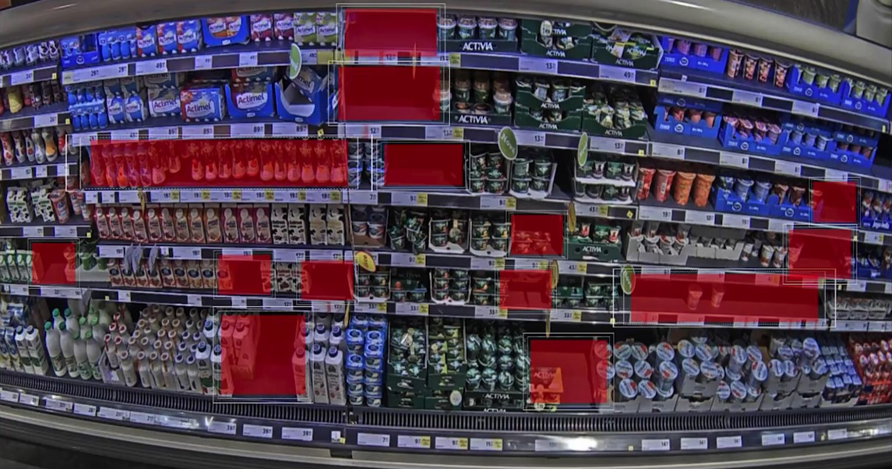
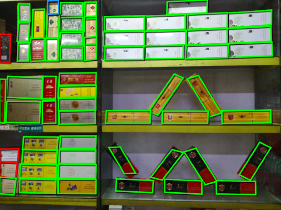

90%+ of China's tobacco brands run their marketing audits on AIMALL's AI.
How a national tobacco network replaced slow, manual store audits with real-time AI verification across millions of outlets.

In China, cigarette retail runs on the planogram. Every pack has an assigned spot, and every promotion is supposed to be built a certain way, across millions of shops. For years the only way to check was to send someone out with a camera and take the field team's word for the rest.
That was slow, and it was easy to fudge. Cigarette packs look nearly the same, so even a careful auditor got the count right only about 60% of the time. One faked "all good" report could hide thousands of dollars of promo spend that never reached the shelf.
Too many shops, packs that look identical
Tobacco shelf rules are strict about facings, POSM and price tags, and the products are hard to tell apart. Across a national network, people just couldn't keep up. Only some shops got checked, the data was weeks old by the time it landed, and fraud got through.
How SnapX handles it
AIMALL rolled out SnapX across the network. A rep photographs the shelf, and the model reads it pack by pack: which SKUs are on the shelf, share of shelf, where the POSM sits, what the price tags say, and how deep the stock runs. Head office sees the result right away instead of weeks later. It now runs across more than 90% of China's tobacco brands, Liqun, Furongwang, Huanghelou, Baisha, RELX and Marlboro among them.
“A photo now does what used to take an auditor half a day, and it's right more than 95% of the time.”

The results
Accuracy went past 95%. The system flagged more than $1M a year in promo fraud, cut over 20 audit roles, and took 80% off the time spent on store visits. Compliance stopped being something head office hoped was happening and became something they could actually see.
See what AIMALL can do for you
Share your scenario and our team will craft a rollout plan for your stores.
Get a Solution